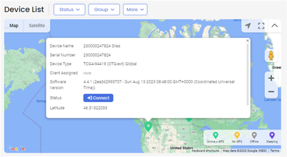
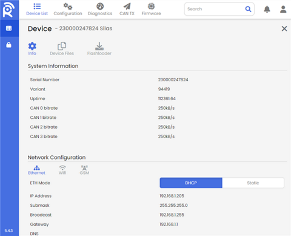

Reach Training Homework
Table of Contents
1. ENGPO-768 App Dev
1.1. Prerequisites
1.1.1. Specifications
- TCG-4
[X]Processor: ARM Coretex A7, 32bit, NXP 696 MHz[X]RAM: 512MB DDR3L-SDRAM[X]EEPROM: 128 kB[X]eMMC Memory: 8 GB (4 GB free for use)
- Dev Package
[X]Toolchain: GCC Linaro[X]Board Support Package- .zip file(s) with necessary firmware
[X]Update / Flashing: BSP Updater, IMX udpate
- Software Data
[X]OS: Embedded Linux[X]Buildroot: v. 2018.02[X]Linux Kernel: 4.19[X]Programming Lang: C/C++, Shell script, Other
- Comms
[X]LAN: onboard cat5 NIC[X]WLAN: 802.11 b/g/n 2.4g Wifi[X]Bluetooth: BLE 4.2[X]Cellular: LTE 4G[X]Satellite: GPS / GNSS / GLONASS[X]CAN: CAN1, CAN2, CAN3, CAN4[X]SERIAL: RS232, default (…)[X]USB: v 2.0*
- I/O
[X]Digital Input: 4[X]Digital Output: 2(3)2 (max 300 mA)[X]Multifunction Input:- Analog Voltage (0..36V)
- Current input (0..24mA) software configurable
1.1.2. DONE Local Device [10/10]
[X]Mount in Dev dock[X]Install gps / gsm antenna[X]Install DB9 gender swap[X]Plug into local Ethernet network[X]Plug into StarTech Serial-to-USB cable[X]Boot up[X]Test comms / Serial- recorded settings:
[X]Test comms / LAN- recorded settings:
[X]Test comms / WLAN- recorded settings:
[X]Log into local HTTP dashboard- recorded S/N: TCG4-230000247824
1.1.3. DONE Remote / Reach [5/5]
[X]Ensure current user / login to Reach[X]Ensure device ID / SN has been added to REACH[X]Log into user portal

[X]Confirm device is visible within reach (should show location)

[X]Push known good sample profile to TCG4 via OTA Update / REACH- confirm changes made at OS level
- Tested using bkcangen profile. OS changes made, unit booted up and ran. New profile showed up in REACH dashboard.
1.2. DONE Non Coding Tasks [2/2]
1.2.1. DONE Setup IDE
- CodeBlocks for Windows = TESTED OK
- CodeBlocks for Linux = TESTED OK
1.2.2. DONE Download desired deployment package (JellyFish)
- move to high level directorie(s) to minimize file overlength faults
- be sure to note different compilers for Windows IDE's vs Linux IDE's
1.3. TODO Coding Tasks [4/6]
1.3.1. DONE Test dummy binary + SCP [4/4]
[X]IDE settings (Codeblocks Linux):- File > New Project > Console Application > C > Name…
- Build = OK
[X]binary info:- ../hello3/bin/Debug/hello3
[X]SCP results:- NOTE: for some reason SCP was only able to work PULLING to TCG4 rather than PUSHING from HOST. When trying to move sample binary via SCP on HOST, would get permission denied messages after entering in pwd for user@ipaddress. After SSH'ing into TCG was able to pull down binary via SCP with out permission problems.
[X]Application manually ran = TRUE
1.3.2. DONE Test dummy binary + OTA (REACH) [1/1]
- GOALS:
- Using stable binary from previous step, show it can be pushed OTA via the REACH portal.
- DONE STEPS:
[8/8]
[X]Create a new DEVICE APP[X]to DEVICE APP add: hello3 (binary) and helloLaucher.sh (shell launcher)[X]Create a new PROFILE[X]to PROFILE, add new DEVICE APP[X]UPDATE intended TCG to use new PROFILE (and attached DEVICE APP)[X]SYNC update[X]REBOOT tcg device[X]Inspect for fileman changes such as:[X]… added repo's in mnt/dataflash/fileman[X]… added symlinks in /mnt/dataflahs/fileman/app[X]… added symlink entry in var/run[X]… added .pid entry in var/run
1.3.3. DONE Test autolaunchable dummy binary + SCP [1/1]
- GOALS:
- Build a new test binary that continuously runs for a fixed number of seconds. Will be used as process binary.
- Build a new shell launcher that starts the new binary as a service.
- Once running, and before the binary times itself out, it should be visible in linux OS of the TCG that a new process is running.
- Ensure this process binary can be STARTed and STOPped automatically via the launcher.
- Should be able to confirm binary process start and stop two ways; via audilbe beeps and via PS / TOP process inspection.
- DONE STEPS:
[3/3]
[X]Design a suitable looping binary. Prefer sleep() usage rather than straight for() loop.- binary called tcgLooper. Displays a start time, goes into sleep mode for 120 seconds, exits sleep mode, displays time after 120 seconds, and terminates. If handled as a service correcly this executable should be visible as a process in '>$ top' or 'ps -ax'
- if functioning correctly, an audible beep should be heard when process is started or stopped manually.
[X]Program, cross-compile, and SCP binary over to TCG unit- NOTE: when doing SCP config of binaries, locations are different than when done via REACH. When done manually, binary should be copied to usr/local/bin. After copying binary to usr/local/bin, a new entry should be made in etc/init.d for the launcher shell. This should be named a late loading service number i.e. S89tcgLooper or something like that. The launcher should point to the binary application in /usr/local/bin. If setup correctly, you should be able to manually execute the service binay by simply executing the service shell in /etc/init.d with 'sudo ./S89tcgLooper start' or sudo ./S89tcgLooper stop'. Upon successful manual start up or stop, should hear an audibl beep from physical TCG unit.
[X]Confirm manually uploaded service binary can be initiated from service call in etc/init.d
1.3.4. DONE Test autolaunchable dummy binary + REACH [1/1]
- GOALS:
- Repeat SCP method above but using REACH method.
- REACH only needs the looping service binary and a launcher file. REACH will handle creating the boot up automation for the new binary.
- Ultimate goal is to prove we can use REACH to automatically configure an uploaded binary and launcher for automatic start up upon reboot.
- Additional goal is to confirm REPO's on board TCG are correctly tracking changes to the dummy binary.
- By ensuring all of these steps BEFORE attempting an application that reads and sum can signals, we can minimize the source of errors when troubleshooting the final app.
- DONE STEPS:
[8/8]
[X]From the REACH website create a new DEVICE APP for the looping binary and launcher- in this case the launcher need not be named any thing special like S89blahblah. REACH will handle launch / uboot configuration so long as both launcher and binary are included in the DEVICE APP AND the user has designated for REACH which file is the launcher file.
[X]Create a new PROFILE[X]add the new DEVICE APP to the new PROFILE.[X]update the specific TCG4 unit to use the new PROFILE, which will automatically sync files from the new DEVICE APP.[X]REBOOT REBOOT REBOOT- simply successfully pushing the new profile and device app OTA is not enouch. POWER CYCLE THE TCG4.
[X]Within 120 second (fixed time set for binary to run before self terminating), log into 'user' and confirm a new process id exists, and is running related to the looping binary[X]Capture PID of the new process by 'ps -ax'. With PID identified, AND binary still running, should also be able to run $ top -p $PID and see that process in the 'top' dashboard.[X]AFTER 120 seconds, binary should have self terminated even though not killed via process daemon. Return to 'top' or 'ps -ax' and confirm the tcgLooper is no longer visible as a running process.
1.3.5. TODO Prepare final APP version [/]
- GOALS:
- Prepare a binary capable of reading CAN1 & CAN2 input signals, summing or averaging them, storing the results, and OUTPUTING the results to the TCG4 in a manner that can be UPLOADED to REACH
- Will require TAF API and use of DBUS.
- Using methods above, skip SCP approach and go straight to REACH. Upload final binary and new binary launcher to the device and test it at the device level.
- Once working onboard the device, ensure the output results can be pushed up OTA back to REACH
- TODO STEPS:
[0/14]
[ ]Mock up pseudo code[ ]Setup means of REACH transmiting known dummy signals for CAN1 and CAN2[ ]Confirm necessary libraries[ ]Confirm necessary API calls[ ]Choose a event triggered or time limited execution[ ]Offline, confirm CAN signals can be…[ ]..enabled and disabled[ ]..read from[ ]..written to[ ]..manipulated (arithmatic)[ ]..converted to / from any necessary data types (uint, string, char, etc)
[ ]Create a suitable launcher file for the CANSUM binary[ ]@ REACH, create (or repurpose) a DEVICE APP for the CANSUM binary[ ]@ REACH, create (or repurpose) a PROFILE for linking the DEVICE APP to[ ]@ REACH, sync the new PROFILE & DEVICE APP to the correct TCG4 unit.[ ]REBOOT REBOOT REBOOT[ ]@ TCG, log in as user and …[ ]…confirm application is running as a service[ ]…application is correctly summing or averaging the CAN signals[ ]…application is correctly writing ouputs (log file, results file, etc ?)
[ ]@TCG, ensure recorded results / output sources are being updated and can be upload to REACH[ ]Upload log from TCG4 to REACH that includes output / resulst values of CAN1 CAN2 summation or averaging.
1.4. TODO Documentation Tasks [0/4]
[ ]Record journal data from this project[ ]Capture any necessary screen shots[ ]Capture useful code snippets[ ]Publish / host and share with STW team members